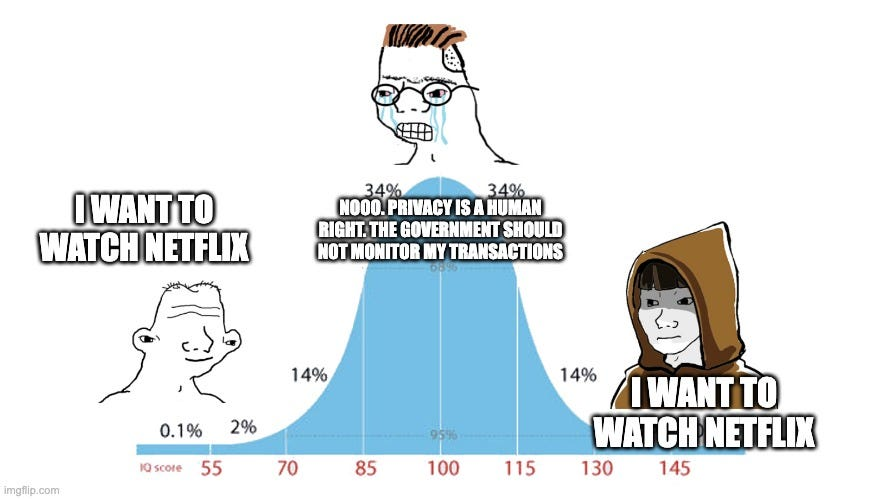
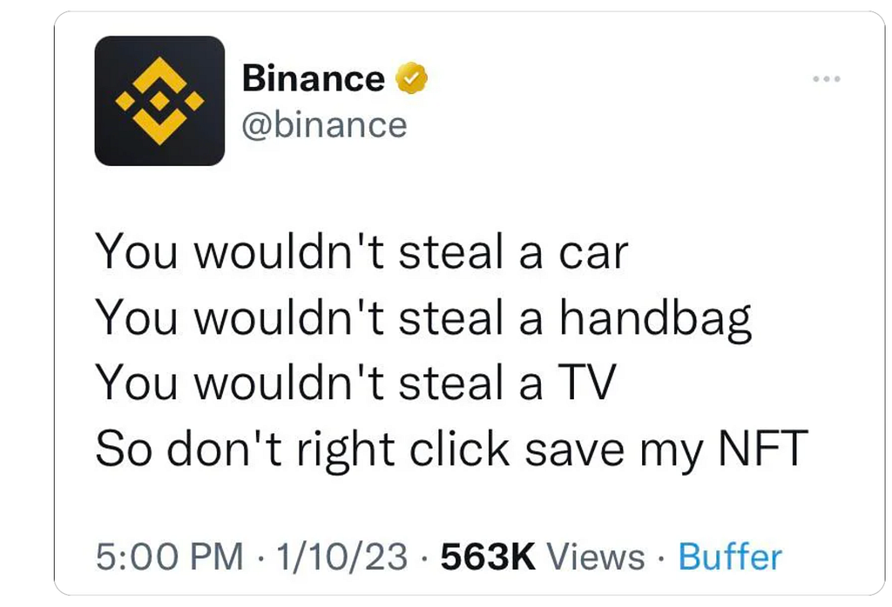

Introducing Smart Transparency
Have you ever wondered why, after ten years of massive investments, there are still no decentralized alternatives to mainstream applications?
I have been in the Blockchain space for a long time and can tell you that it’s not for lack of trying…
The answer is obvious and has been staring us in the face all this time, yet nobody has been able to pin it down.
Until now.
Access control — the foundation of the Internet
If we examine any successful application closely, we will realize it cannot function without restricting access to data.
Some are obvious, like email, messaging applications, bank accounts, private and shared documents, photos, notes, Amazon purchases, etc. But it goes much, much deeper.
When you watch Netflix or Amazon Prime, you can only access content included in your subscription or that you purchased. Even though the latest blockbuster is available on the platform, you can’t access it.
On Spotify, only paid subscribers can choose any song they want, so the entire business model would collapse without data restrictions.
When you play any mobile (or online) game, some information is inaccessible to your opponents, such as the map you have discovered already, your position on the battlefield, your weapons, or your armour.
On WhatsApp, when you “share location” with a friend, nobody else will see where you are.
A Revolut “Joint Account” will notify all owners when a purchase is made, but not anyone else.
Even traditional passwords or biometrics can only exist with access control.
Except for Wikipedia, if you analyse any application you use daily, I guarantee it wouldn’t work without access control.
“Access Control” > “Privacy”
You should realise by now that “Access Control” is much broader than “Privacy”.

It’s one thing to keep what you watch on Netflix private from your friends, but Netflix itself would not exist if anyone could watch any movie without paying a subscription.
Privacy is desirable and valuable, but, in the grand scheme, it represents a tiny niche, a rounding error. Almost nothing is possible without “Access Control”.
Yet, there is no access control on the blockchain
All the data is fully transparent. Everyone in the world can read everything.
Open any blockchain explorer, and you can inspect every single piece of data or transaction that has ever been executed.

It’s evident that, without access control, Web3 cannot progress beyond a cute experiment with decentralization.
What can we do about it?
Smart Transparency
Ten years ago, Ethereum introduced “Smart Contracts” and showed how business logic can be transparent, decentralized, auditable, immutable and unstoppable.
To fix the “Data Access” problem, we’re introducing “Smart Transparency”.
In addition to controlling who can make transactions and how to execute them, the “Smart Contracts” will also be able to control access to data.
In practice, any smart contract has “View Functions,” which return information such as a balance or an NFT. Any Solidity developer will quickly grasp that adding this line of code should prevent anyone but the data owner from successfully calling the view function.
require(tx.origin == owner, “Access denied”)
However, the same developer will explain that this control can easily be bypassed and can’t achieve anything besides being a slight annoyance.
Smart Transparency can only be achieved when this check can no longer be bypassed, and all data and computation are encrypted.
Conclusion
The Web3 space is known for radical transparency. While this has been useful as a starting point, any founder will tell you how much they struggle to build truly useful applications. The reason is not that they desire “privacy” but that they can’t implement “access control.”
“Smart Transparency” is the technology that will power the next generation of “Smart Contracts”.
Find out more
If you’re interested in learning more about what we’re building, check out our other blog posts here or dive into our whitepaper. Join the community on Discord and follow us on Twitter.
Introducing Smart Transparency was originally published in TEN Protocol — Privacy on Ethereum on Medium, where people are continuing the conversation by highlighting and responding to this story.